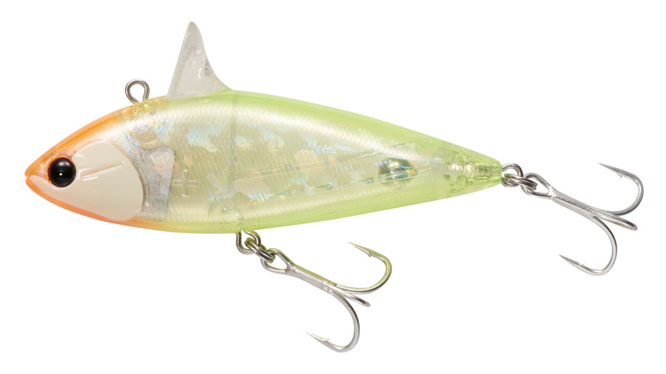
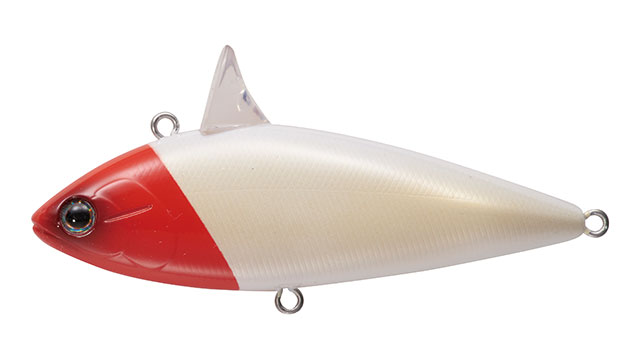
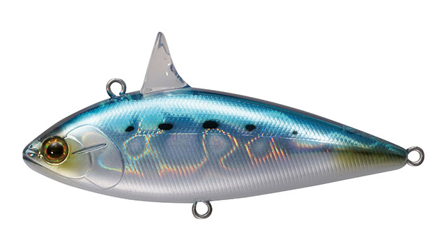
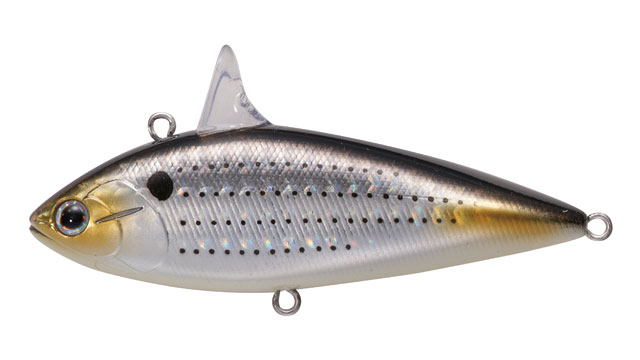
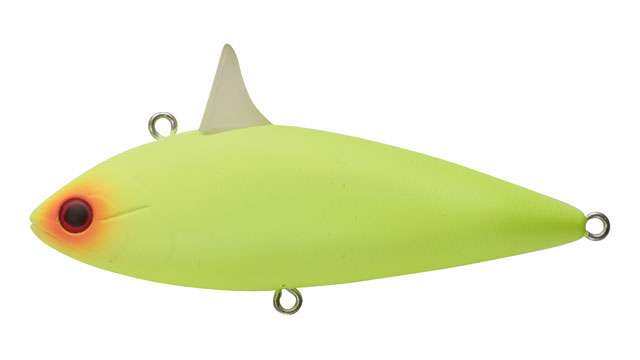
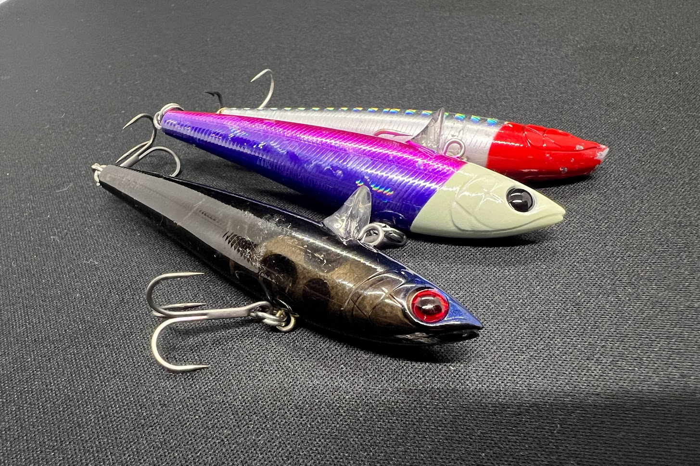
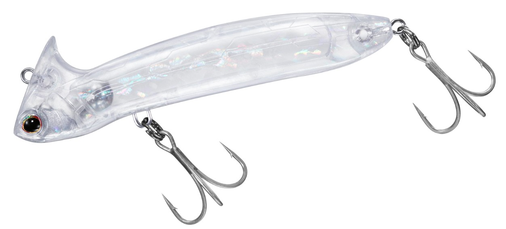

ローリングベイトシャッド
（ROLLINGBAIT SHAD）
ローリングベイトシャッド（ROLLINGBAIT SHAD）はTACKLEHOUSE（タックルハウス）のシンキングルアーです。
名作「ローリングベイト」と同じく背面リップを備えたモデルで、基本の泳ぎはローリングベイト譲り。アピールを高めたいときのローテーションで大きなアドバンテージになる1本です。ここではRBS80（80mm・24g）を中心に紹介します。

画像出典:タックルハウス公式HP
スペック
- メーカー
- TACKLEHOUSE（タックルハウス）
- タイプ
- シンキング
- 全長
- 80mm（RBS80）
- 自重
- 24g
- フック
- ST-46 #5
- リング
- #3
- ターゲット
- シーバス・ヒラスズキ・青物・ヒラメ・コチなど
- 価格
- 1,850円（公式サイト表記）
- 発売
- 2022年4月
▼今すぐチェック

ローリングベイトシャッドの特徴
ローリングベイト譲りの泳ぎに、フォールとS字の“見せる”要素を足したアピール系
-
飛行姿勢にまでこだわったボディデザイン
飛行姿勢まで考えたボディデザインで、飛距離とコントロール性は万全。狙ったポイントへ正確に届けられる。
-
フォール中も広くアピール
着水後、フリーフォールでは頭下がりのスパイラルフォール、テンションフォールではS字を描いて、フォール中にも広くアピールする。
-
速度で変わるウォブリングとS字ローリング
泳ぎだしやデッドスローではゆったりしたウォブリング、スピードを上げるにつれてローリングをメインにS字の軌跡を描く。スピードを増すほどS字の振れ幅は小さくなり、適度な引き抵抗で快適に使える。
ローリングベイトシャッドの使い方
基本はただ巻き。スローリトリーブでもしっかり泳ぎ、手元まで水中の情報を伝えてくれるので、まずはスロー〜ミディアムで巻いて反応を探ります。
フォール中のアピールも強いので、着水後のフリーフォールやテンションフォールを組み込むのも有効。巻きとフォールを組み合わせて、レンジを刻みながら広く探るのが組み立ての基本です。
ローリングベイトシャッドの得意な状況
シーバスを中心に、ヒラスズキ・青物・ヒラメ・コチ・ロックフィッシュ・マダイまで、メーカーが釣果実績を挙げるほど幅広いターゲットに対応。
特に、ローリングベイトでは反応が薄く、もう少しアピールを足したい状況で強い1本。広いエリアをフォールと巻きで探りたい場面でも活躍します。
ワンポイント
メーカーの評価では、泳ぎの質は「ハイアピール寄り」、レンジは「ディープ寄り」、操作性は「オートマチック寄り」。巻くだけで仕事をしてくれるので、まずはただ巻きで使ってみるのがオススメです。
スピードを上げるほどS字の振れ幅が小さくなるので、強く見せたいときはスロー、ナチュラルに見せたいときは速めと、速度で印象を変えられます。
ローリングベイトシャッドの使い分け
| モデル | 全長／自重 | 得意な場面 |
|---|---|---|
| RBS80 | 80mm／24g | オリジナルサイズ。飛距離とアピール重視（本記事のメイン） |
| RBS67 | 67mm／15g | 2024年発売の小型モデル。RBS80よりマイルドな使用感 |
| ローリングベイト77 | 77mm／15g | 背面リップのオリジナル。よりナチュラルな泳ぎ |
アピールを高めたいときはローリングベイトシャッド、ナチュラルに見せたいときはローリングベイト、とローテーションするのがメーカーの推奨する使い方。ローリングベイト77の詳細はローリングベイト77の記事で紹介しています。
人気カラー
ローリングベイトシャッド（RBS80）は全14色展開。シーバス狙いでオススメのカラーを厳選して紹介します。

パール・レッドヘッド定番のレッドヘッド。濁りやナイトでもシルエットを出しやすい。

HGイワシイワシパターンに合わせたホログラム系のナチュラルカラー。

HGコノシロコノシロなど大きめのベイトを意識したホログラム系。

マットチャート高アピールのチャート。マズメや濁り潮に。
画像出典:タックルハウス公式HP
ローリングベイトシャッドに似ているルアー
-

ローリングベイト77 タックルハウス 詳細はこちら＞全長77mm・自重15gの背面リップ付きシンキングペンシル。ローリングベイトシャッドの元になったモデルで、よりナチュラルに見せたいときの持ち替えに。
-

モアザン メトム96S ダイワ 詳細はこちら＞全長96mm・自重21.8gのシーバス用ミノー。重さが近く、遠投して広く探る使い方でローテーションに組み込みやすい。
-
 鉄PANバイブ
ジャクソン
詳細はこちら＞
鉄PANバイブ
ジャクソン
詳細はこちら＞
9〜26gのメタルバイブレーション。より強い波動とレスポンスで、広いエリアを手早く探りたいときに。